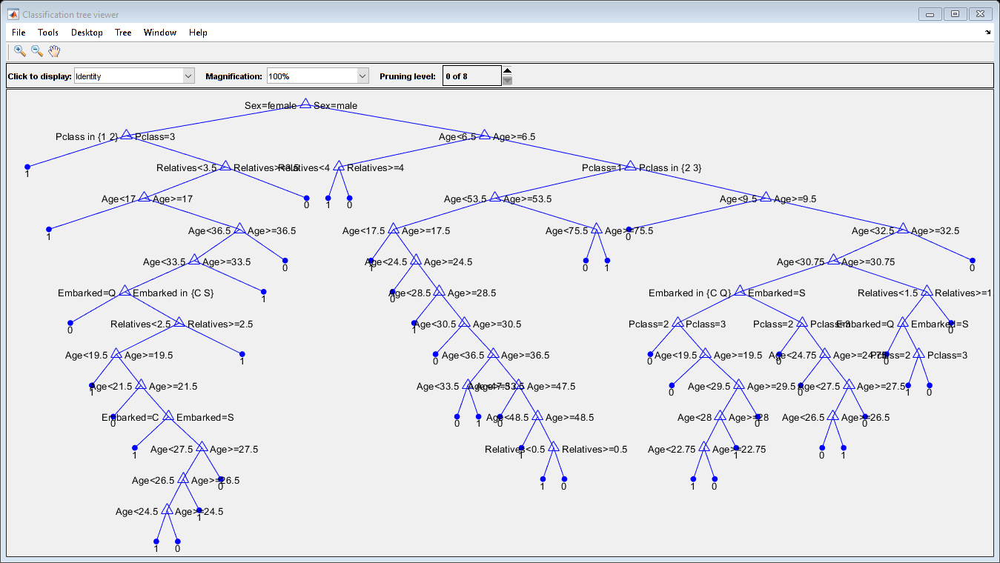
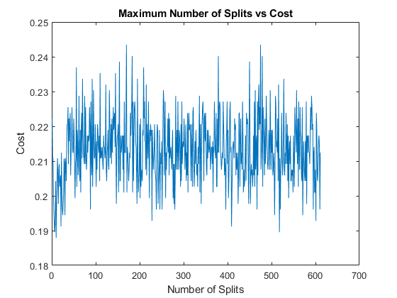
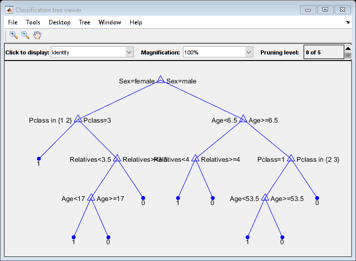
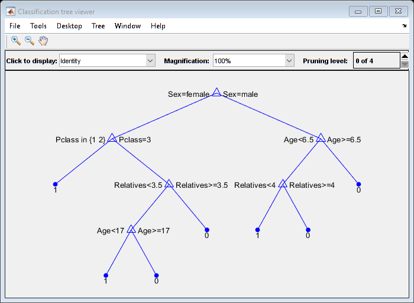

Exercise 2 - Depth control and pruning for Titanic Data
Submitted by Prasannjeet Singh
Contents
Q1. Preprocessing and Importing Titanic Data
If we observe the CSV file, we find that it contains a total of 12 columns with different properties which may or may not be useful for the training of decision trees. Moreover, we can also observe that many cells are empty. It was observed that most (if not all) of the empty sells belonged to the age category. While there was an option to fill the cells with zeroes or something else using some metric, it would still have affected the overall model, as those wouldn't have been the real values. Therefore, it was decided to omit all the rows which had empty cells for age.
Additionally, there were also some empty cells in the 'Embarked' category. Also in this case, the number of rows were only 2 (was calculated by isnan(table_name)), and therefore, it was also decided to remove those rows.
Sibsp and Parch Sibsp and Parch respectively denote number of siblings/spouse and number of parents/children. However, there is no reason to believe that people are more likely to survive/not survive if they have more siblings/spouse as compared to parents/children, or vice versa. Therefore, all the relatives were merged to one by adding both these columns into one.
Reasoning behind choosing variables for decision trees:
Note: The property Pclass is assumed to be the ticket-class of the passenger, where 1: 1st class, 2: 2nd Class and 3: 3rd Class.
Properties like Passenger ID/Name/Ticket ID and Cabin number make no difference in their chances of survival in the titanic, and therefore, these properties were completely removed in the calculation of decision trees. Additionally, it was observed that there are many conflicts in the 'Fare' property in the table. Minimum ticket fare for first class was observed to be 5, however, minimum ticket fare for second class was observed to be 10. Therefore, this property highly conflicts with the 'PClass' property, and I believe that including both 'PClass' and 'Fare' may adversely affect the model, and therefore, I decided to opt out of the 'Fare' property for creating this model. Moreover, a person with a First Class ticket was more likely to be given preference than someone with a Second Class ticket, and the fares of the tickets wouldn't have made any significant difference. The idea is inspired from this Independent.co.uk link.
Therefore, finally we are left with the following properties, which will be used in formulating the decision tree:
- PClass
- Age
- Sex
- Relatives (Sibsp + Parch)
- Embarked
There are strong reasons to believe that these five properties are highly responsible for the survival or non-survival of a passenger. In case of Age, it is more likely that children were preferred over others. Likewise, women might have had a higher likelihood of being favored over men. Embarked might also have had a slight affect on passenger's survival, as people embarking later may not have gotten their preferred seats/cabins. Properties PClass and Relatives were discussed earlier. All the properties above, after performing the appropriate preprocessing, were stored in a matrix X in the given sequence. The Survived property is indubitably used, and is saved in the solution matrix y.
All the pre-processing steps are accompanied with comments below:
% Extracting the Import Options object. opts = detectImportOptions('Data/titanic.csv'); % In the Import Options, changing the rule to omit all the rows if a cell % has missing value opts.MissingRule = 'omitrow'; % Also specifying the number of columns that we need to be imported. opts.SelectedVariableNames = [2 3 5 6 7 8 12]; % Reading the table according to the import options we created above data = readtable('Data/titanic.csv',opts); % Adding the 'Sibsp' and 'Parch' columns into one and renaming the column % to 'Relatives' data(:,'SibSp') = array2table(table2array(data(:,'SibSp')) + table2array... (data(:,'Parch'))); data(:,'Parch') = []; data.Properties.VariableNames{'SibSp'} = 'Relatives'; % Changing the 'Pclass', 'Sex', 'Embarked' and 'Survived' columns into % categorical values. data.Pclass = categorical(data.Pclass); data.Sex = categorical(data.Sex); data.Embarked = categorical(data.Embarked); data.Survived = categorical(data.Survived); % Separating a part of data to use it as test testData = data(1:100,:); data(1:100,:) = []; % Applying fitctree and viewing the tree with default configurations tree = fitctree(data,'Survived'); % Passing tabular parameters in fitctree view(tree,'Mode','graph'); hTree=findall(0,'Tag','tree viewer'); set(hTree, 'Position', [0 0 1000 500]); snapnow; close(hTree);
Q2.1. Depth Control
Before we control the depth, first we will decide the opmimal number of splits for the decision tree. As we know, the default value of MaxNumSplits in case of fitctree() is n-1, where n is the size of the sample data, therefore we will run a loop with MaxNumSplits from 1 to n-1 and apply 10-fold cross validation on each model, to find out the MaxNumSplits that gives us the least cost. That will be the value we will choose for our model.
Calculating the decision tree around 600 times takes a while, and therefore, I have already performed it and saved the result in bestSplit.mat, which I have loaded below:
% Commented code below calculates the bestDepth variable, which is already % calculated and loaded to save time. % k=10; % maxPossibleSplits = size(data,1)-1; % for i = 1:maxPossibleSplits % fprintf(strcat(num2str(i),'\n\r')); % mdl = fitctree(data,'Survived','MaxNumSplits',i); % cvmodel = crossval(mdl,'KFold',k); % WeightedLoss = kfoldLoss(cvmodel,'lossfun','classiferror','mode','average'); % bestSplit(i,:) = [i WeightedLoss]; % end % Loading the file and plotting MaxNumSplits vs the Cost load 'Data/bestSplit.mat'; hFig = figure(2); plot(bestSplit(:,1), bestSplit(:,2)); title('Maximum Number of Splits vs Cost'); xlabel('Number of Splits'); ylabel('Cost'); snapnow; close(hFig);
As we can see above, we don't really find a pattern for the cost vs maximum number of splits. Therefore, we will check the top ten split values, which give us the minimum cost below:
bestSplit = sortrows(bestSplit,2);
bestSplit = bestSplit(1:10,:);
bestSplit = array2table(bestSplit);
bestSplit.Properties.VariableNames{'bestSplit1'} = 'MaxNumSplits';
bestSplit.Properties.VariableNames{'bestSplit2'} = 'Cost';
bestSplit
bestSplit =
10×2 table
MaxNumSplits Cost
____________ _______
10 0.18791
7 0.18954
518 0.18954
21 0.19118
409 0.19118
6 0.19118
601 0.19281
228 0.19281
5 0.19444
8 0.19444
Now if we take a closer look at the data above, we realize that split = 10 gives us lowest cost, however, split = 7 also gives us a considerable amount, with less splits. In this case, had the split value that gives us the least cost been very high, we could have gone for the next best, i.e. 7. But since there is not much difference between number of splits, we will stick to the least cost value, i.e. MaxNumSplits = 10.
cmdl = fitctree(data,'Survived','MaxNumSplits',10); view(cmdl,'Mode','graph'); hTree=findall(0,'Tag','tree viewer'); snapnow; close(hTree);
Now, if we observe the very first tree that we made (without any splits), we can observe that the maximum number of depth was 15, and generally, the first thing we would want to do is to reduce the depth by half, which is around 7, to make the model simpler. However, after choosing MaxNumSplits as 10, the resultant tree already has a maximum depth of 4, which is much simpler. Therefore, we will consider this as our final model, without choosing the depth again. However, if we were to do it, we could have done it by converting the current dataset to tall data and then applying fitctree() as follows:
m=7 tallData = tall(data); mdl = fitctree(data,'Survived','MaxNumSplits',10,'MaxDepth',m);
Since the maximum number of splits has already been finalized, the depths would have been calculated by keeping the splits as 10.
Nevertheless, I have calculated the final model with maximum split as 10 and saved it as splitModel.mat. The model has already been visualized above. To check the performance, we have chosen first 100 as the test data and the rest as training to find out the total number of erros:
clearvars cmdl; load Data/splitModel.mat; estimatedSurvival = predict(cmdl,testData); actualSurvival = categorical(testData.Survived); totalErrors = sum(estimatedSurvival ~= actualSurvival)
totalErrors =
26
Therefore, according to the current chosen model, total errors are 20.
Q2.2. Pruning
Pruning can directly be performed by comparing all the prune levels and selecting the one which gives us the minimum cross-validated error. This can be done like so:
Note that in this case we will work on the fully grown tree.
[~,~,~,bestlevel] = cvLoss(tree,'SubTrees','All','TreeSize','min')
bestlevel =
3
Therefore, according to above, the most optimized prune level is 4.
We can also find out the best pruning level by checking our test data on each pruning level (0 to 8 in our case), and selecting the one that gives us the least error. This can be done like so:
clearvars pruneError; for i = 0:8 prunedTree = prune(tree,'Level',i); estimatedSurvival = predict(prunedTree,testData); pruneError(i+1,:) = [i sum(estimatedSurvival ~= actualSurvival)]; end pruneError = array2table(pruneError); pruneError.Properties.VariableNames{'pruneError1'} = 'PruneLevel'; pruneError.Properties.VariableNames{'pruneError2'} = 'TotalErrors'; pruneError
pruneError =
9×2 table
PruneLevel TotalErrors
__________ ___________
0 23
1 22
2 20
3 19
4 18
5 22
6 23
7 21
8 34
Therefore, as seen above, even in this case, the best prune levels are 3 and 4, which is in concurrence to what we received above by comparing crossvalidated results. Let us choose 4 as the final prune level for the model, and view the pruned tree and error: (The pruned tree model was already created and saved in the folder Data.
clearvars prunedTree hTree estimatedSurvival prunedError; % prunedTree = prune(tree,'Level',4); % Loading the already created pruned tree: load Data/prunedTree.mat; view(prunedTree,'Mode','Graph'); hTree=findall(0,'Tag','tree viewer'); snapnow; close(hTree); estimatedSurvival = predict(prunedTree,testData); prunedError = sum(estimatedSurvival ~= actualSurvival)
prunedError =
18
Comparison
Total errors in case of MaxSplit = 10 was 23, where as total errors with prune-level-4 was 18. Therefore, we can conclude that for our test data, pruned tree (with prune level 4) performs better.